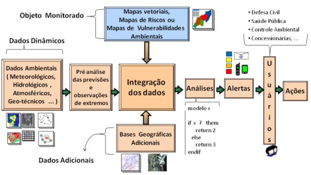

O que é a TerraMA² ?
A TerraMA² é uma plataforma computacional utilizada para desenvolvimento de sistemas operacionais para fins de monitoramento, análise e alertas de riscos ambientais. A plataforma necessita, fundamentalmente, da entrada de dados ambientais dinamicamente coletados, do objeto a ser monitorado como mapas risco e de dados adicionais como bases cartográficas (Figura 1.1). A integração desses dados é realizada nos modelos de análise escritos com uma linguagem de programação de fácil aprendizado. O próximo passo é transformar as análises automáticas em alertas, os quais devem ser disponibilizados para usuários múltiplos (defesa civil, concessionárias, entre outros).

Figura 1.1 - Diagrama dos Principais Módulos do Sistema de Monitoramento, Análise e Alerta.
Os dados necessários para a operação da plataforma incluem:
- Dados dinâmicos: são dados ambientais coletados automaticamente que informam condições do meio ambiente através de variáveis obtidas a intervalos de tempo pré-determinados. Incluem dados oriundos de diversos tipos de instrumentos de medição das condições ambientais tais como satélites, radares meteorológicos, estações hidrometeorológicas, entre outros. Tais dados devem estar disponíveis em servidores de dados em computadores locais ou remotos. Se em servidores remotos, tais dados deverão ser coletados para a rede local vista pela plataforma. Podem ser armazenados localmente na forma de arquivos convencionais ou como tabelas em bancos de dados geográficos.
- Dados estáticos – são mapas vetoriais ou matriciais que não tem uma dinâmica de atualização como os dados dinâmicos. Tais mapas são utilizados nos modelos de análise para serem cruzados com dados dinâmicos ou outros dados estáticos. Estes dados também devem estar disponíveis em servidores de dados na forma de arquivos convencionais ou como tabelas em bancos de dados geográficos.
A operação da plataforma em salas de monitoramento ambiental (prefeituras, defesa civil, institutos de pesquisa ou empresas) requer três níveis de usuários, divididos em:
- Administradores da Plataforma: São usuários que fazem a instalação, configuração e administração da plataforma. São responsáveis por definir onde serão criados os bancos de dados e a gerência dos serviços que ficarão automaticamente realizando as tarefas definidas pelos operadores do sistema construído. Usuário com este privilégio utiliza o módulo de administração web para gerenciar outros usuários, com ou sem privilégio de administrador, ou ainda projetos definidos pelos usuários.
- Operadores da Plataforma: Os operadores são usuários sem privilégio de administrador que também fazem uso do módulo de administração web, porém, apenas para gerenciar os projetos criados por estes usuários. Estes farão uso dos serviços de coleta, análise e notificação previamente inicializados por um administrador para desenvolver seus projetos e dessa maneira criar um sistema de monitoramento, análise e alerta.
- Clientes dos Alertas: São os usuários ou agentes que têm a competência para executar as ações preventivas para a diminuição de perdas no caso da ocorrência de um evento extremo. Estes terão acesso apenas ao módulo de monitoramento web para visualização dos dados e alertas em tempo real. Recebe ainda notificações por meio de email ou mensagens eletrônicas.
NOTA: Esta divisão é apenas para fins de gestão em instituições que têm esta necessidade de fazer monitoramento. Em outras situações uma única pessoa pode exercer os três níveis como por exemplo, um pesquisador que deseja testar seus modelos de análise em um computador pessoal.